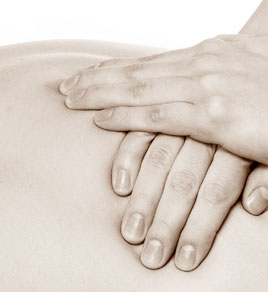
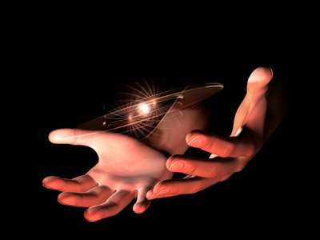
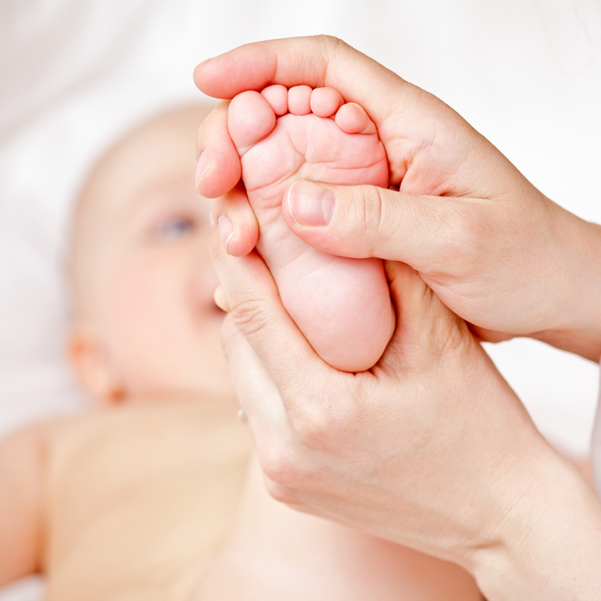
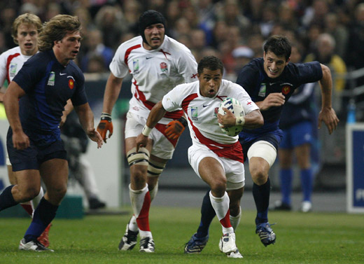
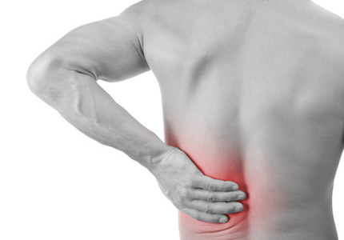
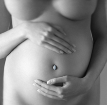
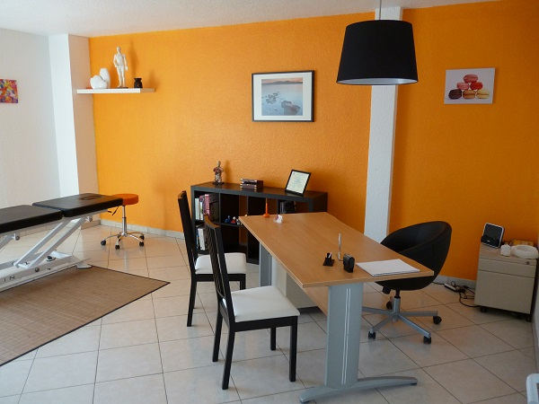
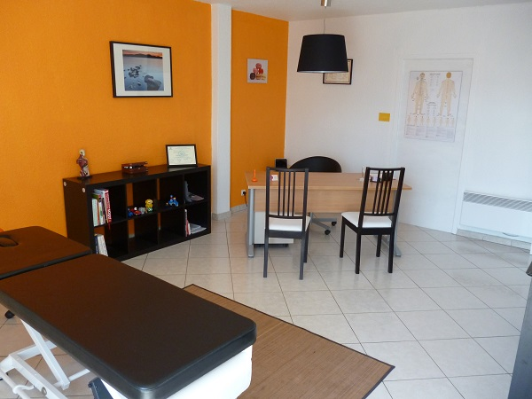

Céline Gidon , Ostépathe D.O exclusif, diplômée en musculo-squelletique, viscéral et crânien.
Ostéopathe au sein de clubs sportifs de la région
Diplômée en ostéopathie au sein de l’Osteopathic School ATMAN après 5 ans d’études.
Le centre ATMAN fait partie des 11 établissements agrées par le ministère de la santé de la jeunesse et des sports et certifiées ISO9001:2000

Déroulement d’une séance
L'ostéopathe commence sa consultation par un interrogatoire du patient et un examen approfondi de ses bilans radiologiques et biologiques. Puis grâce à des tests palpatoires spécifiques, l'ostéopathe va chercher les zones du corps présentant des restrictions de mouvements susceptibles d’altérer l’état de santé.
Le geste ostéopathique est doux, indolore et fait appel à la mobilité propre de chaque tissu. L'ostéopathe choisit la technique la mieux adaptée et la plus confortable pour chaque patient, en fonction de son âge et de sa morphologie.
Une séance dure en moyenne 45 mn.
Dans les 2/3 jours qui suivent une séance d’ostéopathie il est normal de ressentir une douleur identique ou plus importante que précédent la séance. Cela s’explique par le fait que le thérapeute, durant son traitement, a redonner à l’organisme un équilibre perdu jusque là. De ce fait le corps doit se réadapter à ce nouvel équilibre, il peut y avoir douleurs articulaires, musculaires… Cependant après quelques jours les douleurs doivent s’estomper. Si ce n’est pas le cas il faut recontacter son ostéopathe afin de voir avec lui pourquoi une douleur est toujours présente.

Définition
L’ostéopathie est créée par un médecin américain, Andrew Taylor Still, à la fin du XIX siècle. Fondée sur son expérience de chirurgien de guerre, il a su transformer ses observations en une médecine totale.
L’ostéopathie permet de rester en bonne santé, parce que, selon Still « quand la structure est normale et harmonieuse, la maladie ne peut se développer ».
Still, comme tous les médecins de son époque, fut confronté aux ravages des maladies infectieuses. Les antibiotiques n’ayant pas été découverts, les médecins proposaient des médecines qui souvent, étaient encore plus néfastes aux patients, qu’une absence de traitement.
L’ostéopathie initiée par Still est donc fondée d’une part, sur la notion de globalité du corps il n’y a pas d’organe dans le corps qui soit totalement indépendant de ceux qui l’entourent et d’autre part, sur un rejet des traitements médicamenteux « l’homme possède en lui les moyens de se guérir ».
Bien évidemment, le concept ostéopathique a évolué avec les progrès de la médecine et de notre connaissance de la physiologie. Mais à partir de ce concept, on a pu développer un système de pratique clinique, principalement caractérisé par une étude plus approfondie des tissus externes du corps, des structures articulaires, des muscles et ligaments et des fascias de l'ensemble du corps humain.
L’étude de l’inter-relation ou plus exactement de l’interpénétration ou mieux encore de l’imbrication de l’ensemble de toutes ces structures constitue la base, la pierre angulaire et le ciment de l’ostéopathie, en fait son originalité et explique son immense succès.
"Avant de réajuster n'importe quel os du corps, quel qu'il soit, ou quelle que soit la distance à laquelle il a été forcé de son logement, vous devez d'abord relâcher ses attaches, comme à son extrémité articulaire par exemple, en gardant toujours à l'esprit que lorsqu'un os ne s'articule plus normalement, les muscles et les ligaments qui l'entourent sont irrités, et maintiennent une contracture permanente."
Andrew Taylor Still
A qui est- elle destiné ?

Les bébés :
Chaque naissance devrait être suivie d’un examen ostéopathique attentif.
L'accouchement peut être le premier des traumatismes pour le bébé. Trop long ou trop court, il peut perturber le fonctionnement normal des structures crâniennes. Difficile, il nécessite parfois l'emploi de spatules, ventouses ou forceps, qui vont influer sur la mobilité des jonctions des os du crâne et occasionner des troubles fonctionnels immédiats ou ultérieurs.
Les enfants :
L'enfant décrit à l'école comme “ne tenant pas en place, rêveur, manquant de concentration, dyslexique…” trouvera une aide certaine dans le traitement ostéopathique. Ce suivi lui permettra de se détendre, de mieux se concentrer et d'être ainsi plus attentif. Les enfants sont particulièrement réceptifs et sensibles au confort apporté par le traitement. Les difficultés scolaires seront d'autant plus améliorées que le traitement sera précoce.
Les troubles de la statique chez l'enfant (scoliose, lordose, cyphose) sont le signe d'une mauvaise adaptation du corps. Les causes, qui peuvent être viscérales, traumatiques, crâniennes, seront déterminées par un diagnostic ostéopathique spécifique. Des techniques de correction adaptées amélioreront ces troubles vertébraux. La collaboration avec d'autres professions de santé est parfois nécessaire.
A l'heure actuelle, on pose de plus en plus d'appareils dentaires et de nombreux orthodontistes travaillent en collaboration avec les ostéopathes pour la réussite du traitement et pour le confort de l'enfant.
L’appareil orthodontique prend appui sur les structures du crâne pour faire levier sur la mâchoire et les dents.
Ces contraintes peuvent provoquer maux de tête, maux de dos, vertiges, troubles visuels, difficultés de concentration , modifications de l’humeur.

Les sportifs :
L’excès d’activité sur une articulation mécaniquement instable peut engendrer une fatigue et une inflammation des tendons ou de l’articulation elle-même.
Suite à une blessure mal soignée, le corps va compenser. De nouvelles douleurs vont apparaître.
En cas de chute également, de douleurs articulaires, tennis elbow, pubalgies, mauvaise récupération. L'ostéopathe pourra y remédier en traitant tout d'abord la blessure initiale ainsi que les déséquilibres créés par compensation. Par exemple: une entorse de cheville mal soignée entraîne une cheville instable provoquant des déséquilibres du genou, de la hanche, du bassin, voir même du dos.
Traitement de différents symptômes : de la simple contracture à la douleur invalidante empêchant le bon déroulement d'un entraînement et limitant les performances.
Une consultation est conseillée avant une compétition importante pour prévenir toute possibilité de blessures ou de contre performances.

Les adultes :
Les motifs de consultations sont en général les douleurs ostéo-articulaires (lumbago sciatique, entorses)
L'ostéopathie est également très efficace pour les pathologies fonctionnelles digestives (constipation, ballonnement, diarrhée), gynécologiques (douleurs de règles douleurs aux rapports) et les affections crâniennes (migraines, pathologies ORL chroniques).
Les techniques utilisées par l'ostéopathe seront adaptées à l'âge et à l'état des structures articulaires du patient.
L’ostéopathe peut également avoir une action sur la gestion du stress. En effet ce phénomène survient lors d’un déséquilibre neuro-hormonal, en rééquilibrant ce flux disharmonieux nerveux et hormonal, le corps sera plus apte à gérer les moment du quotidien.
De plus en plus d’études montrent que la posture, notemment sur le lieu de travail, conditionne la santé ostéo-articulaire du patient. Il est donc important pour l’ostéopathe d’étudier avec précision les postures adaptées au travail mais aussi à la maison dans les tâches du quotidien afin de donner en plus d’un traitement adapté, des conseils visant à redonner une bonne dynamique ostéo-articulaire et musculaire.

Les femmes enceintes :
L’ostéopathie est tout particulièrement indiquée chez la femme enceinte, par des techniques manuelles douces, elle vise à vérifier et corriger les petits déséquilibres du corps que les modifications posturales liées à l’état de grossesse peuvent engendrer aussi bien sur le plan structurel ou ostéo-articulaire que viscéral.
Les principales indications sont les suivantes :
-douleur mécanique du bassin, des lombaires, du coccyx, du pubis, irradiation sur le trajet du nerf sciatique
-troubles digestifs : constipations, remontées acides, naussées
-troubles du sommeil et gestion emotionnelle de la grossesse
-préparation à l’accouchement.
Le cabinet est situé au 799 avenue de Tournamy Tour Center 06250 Mougins.
Le cabinet est ouvert :
Le lundi et le jeudi de 8h à 17h
Le mardi de 8h à 20h
Le mercredi de 8h à 14h
Le vendredi de 8h à 20h
Le samedi de 8h à 12h
En cas d’urgence en dehors de ces plages horaires, des soins à domicile sont mis en place

Les tarifs
Au cabinet : 55 euros
A domicile : 65 euros
Les enfants de moins de 16 ans : 40 euros
NB:Le cabinet n’étant pas muni d’appareil carte bleue, seul les chèques et espèces sont acceptés.
Remboursements
La sécurité sociale ne prend pas en charge actuellement les actes d’ostéopathie.
La plupart des mutuelles en revanche remboursent une partie des séances.
Une facture vous sera remise sur simple demande pour le remboursement.
Lien liste mutuelles:
ABELA
AGF SANTE
AGIPI (TM, Confort, Privilège)
ALPIS
APTHEMA
APRIL
ATOLL SANTE
AXA
GENERALI FRANCE ASSURANCES
CAP MUTUELLE
GOUPAMA
GROUPE FRANCE-MUTUELLE
HARMONIE MUTUELLE
INTEGRANCE (forfait « ostéopathie »)
LA COMPAGNIE DES FEMMES ( formule Confort et Sérénité)
MAAF SANTE
MCD
MNCI
MUTUELLE ACTION
MUTUELLE AEROSPATIALE
MUTUELLE AGENTS DES IMPOTS (MAI)
MUTUELLE DE LOIRE ATLANTIQUE
MUTUELLE DES PAYS DE VILAINE
MUTUELLE DU MINISTERE DE L’INTERIEUR
MUTUELLE EUROPEENNE DE SANTE ET PREVOYANCE DES AGENTS DU GAZ ET DE L’ELECTRICITE